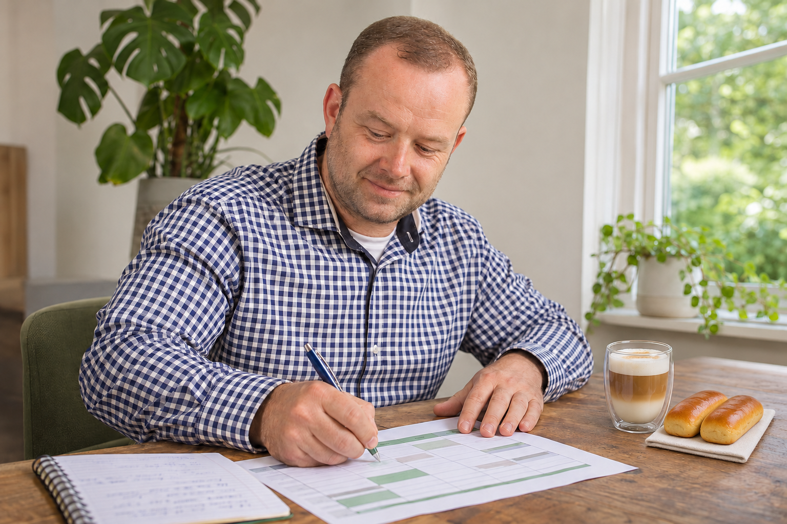
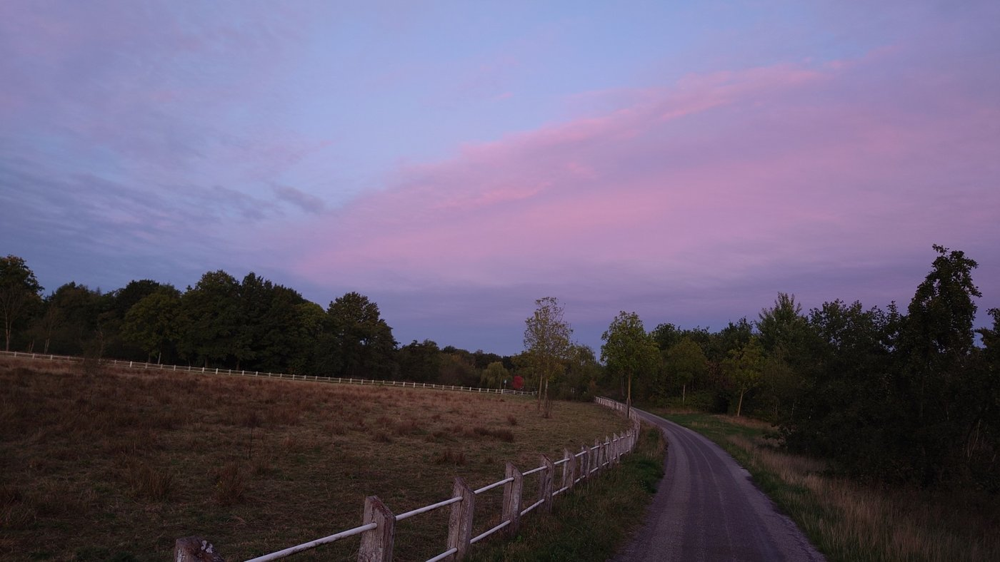
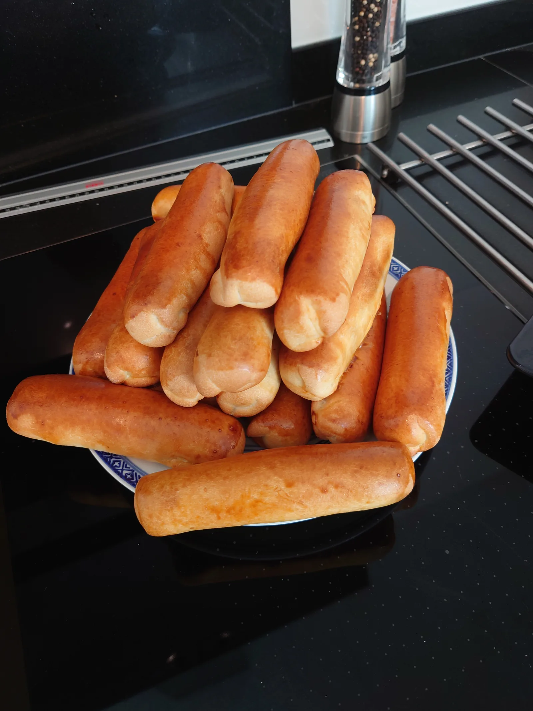

Marcel Wijers.
Op mijn eigen wijze.
Welkom op EigenWijers. Een plek voor mijn werk, mijn verhalen en recepten die ik graag wil bewaren en delen.

Mijn werk
Over plannen, samenwerken en overzicht houden.
Lees verder
Mijn verhalen
Over thuis, mijn vader, Eindhoven, Jip en wat ik onderweg tegenkom.
Lees verder
Recepten
Recepten van mezelf en mijn familie, met wat ik tijdens het maken heb geleerd.
Bekijk de receptenLaat gerust van je horen.
Een vraag, een idee of gewoon even kennismaken?